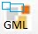

Permite generar un fichero GML de CONSTRUCCIONES, para la generación de un ICUC (1).
Se genera en formato INSPIRE de CATASTRO a partir de una capa de Polígonos, completa o solo de sus elementos seleccionados.
Se parte de una capa de polígonos cargada en la vista. Cada registro debe tener una geometría de una CONSTRUCCIÓN de la parcela, y debe contar con 6 CAMPOS OBLIGATORIOS conteniendo cada uno los siguientes valores:
- LOCALID: Normalmente la RC de la parcela catastral.
- NAMESPACE: Por defecto, siempre debe ser ES.LOCAL.BU.
- NOMBRE CONSTRUCCIÓN: Nombre identificador de la construcción en el conjunto. Ejemplos: EDIFICIO_1, EDIFICIO_2, NAVE_ESTE, APARCAMIENTO_01, etc.
- USO: Uso de la construcción:
- PLANTAS: Número de plantas sobre rasante.
- TIPO: Tipo de edificio: Building, otherconstructions ("piscina", "deposito", "tendedero", "pista", "OtherConstruction", "otherconstruction", etc).
CAPA DE ENTRADA: Capa de POLÍGONOS cargada en la Tabla de Contenido (TOC).
SOLO ELEMENTOS SELECCIONADOS: ACTIVADO, generará el GML de las parcelas seleccionadas.
Directorio y nombre de fichero de salida GML; se puede componer con el botón de la derecha. El sistema guarda el último directorio y nombre de fichero empleados.
LOCALID, NAMESPACE, NOM_CONST, USO_CONST, NUMPLANTAS, TIPO_CONST
Se debe elegir en cada selector los campos de la capa que contiene cada uno de los datos especificados arriba.
Se pueden condicionar el número de decimales de los formatos de salida del GML para las COORDENADAS de los nodos. Se recomiendan 2 decimales para COORDENADAS.
El programa analiza las parcelas detectando:
Al pulsar GENERA GML, se genera el fichero con el directorio y nombre elegidos
EJEMPLO DE SALIDA: .\TEMPLATES\EJEMPLO CONSTRUCCIONES CON ANILLO OTRASCONST.gml
Comprobar LOCALID resultantes repetidos al finalizar: Previamente a la generación, se pueden intentar detectar LOCALID repetidos.
Revisar RRCC identicas a origen: Se analizan las parcelas con NAMESPACE 'ES.SDGC.CP', analizando si tienen una coincidencia absoluta de geometría con la parcela descargada de catastro.
(1) ICUC: Informe catastral de Ubicación de Construcciones.
Más INFO:
Descripción Informe Catastral de Ubicación de Construcciones